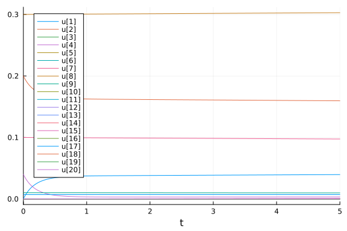
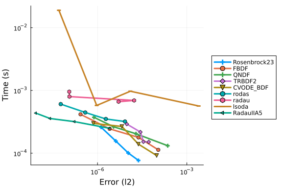
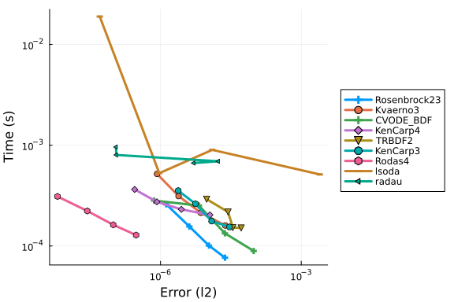
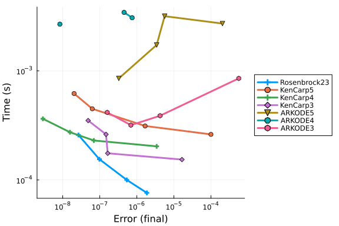
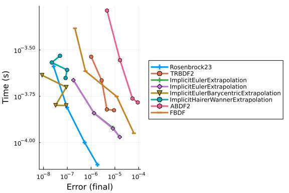
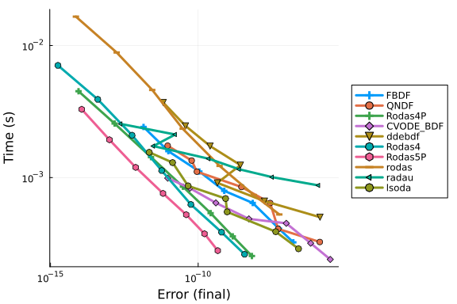
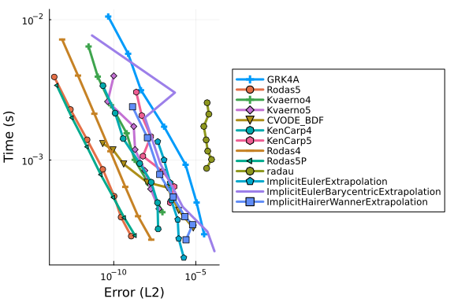
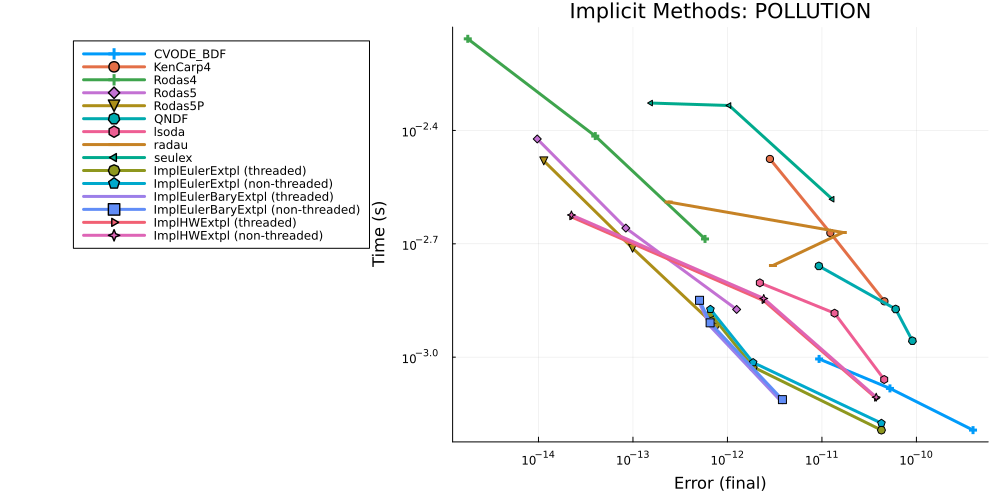

POLLU Work-Precision Diagrams
using OrdinaryDiffEq, DiffEqDevTools, Sundials, ParameterizedFunctions, Plots, ODE, ODEInterfaceDiffEq, LSODA, LinearSolve
using ProfileSVG, BenchmarkTools, Profile
gr() # gr(fmt=:png)
using LinearAlgebra
const k1=.35e0
const k2=.266e2
const k3=.123e5
const k4=.86e-3
const k5=.82e-3
const k6=.15e5
const k7=.13e-3
const k8=.24e5
const k9=.165e5
const k10=.9e4
const k11=.22e-1
const k12=.12e5
const k13=.188e1
const k14=.163e5
const k15=.48e7
const k16=.35e-3
const k17=.175e-1
const k18=.1e9
const k19=.444e12
const k20=.124e4
const k21=.21e1
const k22=.578e1
const k23=.474e-1
const k24=.178e4
const k25=.312e1
function f(dy,y,p,t)
r1 = k1 *y[1]
r2 = k2 *y[2]*y[4]
r3 = k3 *y[5]*y[2]
r4 = k4 *y[7]
r5 = k5 *y[7]
r6 = k6 *y[7]*y[6]
r7 = k7 *y[9]
r8 = k8 *y[9]*y[6]
r9 = k9 *y[11]*y[2]
r10 = k10*y[11]*y[1]
r11 = k11*y[13]
r12 = k12*y[10]*y[2]
r13 = k13*y[14]
r14 = k14*y[1]*y[6]
r15 = k15*y[3]
r16 = k16*y[4]
r17 = k17*y[4]
r18 = k18*y[16]
r19 = k19*y[16]
r20 = k20*y[17]*y[6]
r21 = k21*y[19]
r22 = k22*y[19]
r23 = k23*y[1]*y[4]
r24 = k24*y[19]*y[1]
r25 = k25*y[20]
dy[1] = -r1-r10-r14-r23-r24+
r2+r3+r9+r11+r12+r22+r25
dy[2] = -r2-r3-r9-r12+r1+r21
dy[3] = -r15+r1+r17+r19+r22
dy[4] = -r2-r16-r17-r23+r15
dy[5] = -r3+r4+r4+r6+r7+r13+r20
dy[6] = -r6-r8-r14-r20+r3+r18+r18
dy[7] = -r4-r5-r6+r13
dy[8] = r4+r5+r6+r7
dy[9] = -r7-r8
dy[10] = -r12+r7+r9
dy[11] = -r9-r10+r8+r11
dy[12] = r9
dy[13] = -r11+r10
dy[14] = -r13+r12
dy[15] = r14
dy[16] = -r18-r19+r16
dy[17] = -r20
dy[18] = r20
dy[19] = -r21-r22-r24+r23+r25
dy[20] = -r25+r24
end
function fjac(J,y,p,t)
J .= 0.0
J[1,1] = -k1-k10*y[11]-k14*y[6]-k23*y[4]-k24*y[19]
J[1,11] = -k10*y[1]+k9*y[2]
J[1,6] = -k14*y[1]
J[1,4] = -k23*y[1]+k2*y[2]
J[1,19] = -k24*y[1]+k22
J[1,2] = k2*y[4]+k9*y[11]+k3*y[5]+k12*y[10]
J[1,13] = k11
J[1,20] = k25
J[1,5] = k3*y[2]
J[1,10] = k12*y[2]
J[2,4] = -k2*y[2]
J[2,5] = -k3*y[2]
J[2,11] = -k9*y[2]
J[2,10] = -k12*y[2]
J[2,19] = k21
J[2,1] = k1
J[2,2] = -k2*y[4]-k3*y[5]-k9*y[11]-k12*y[10]
J[3,1] = k1
J[3,4] = k17
J[3,16] = k19
J[3,19] = k22
J[3,3] = -k15
J[4,4] = -k2*y[2]-k16-k17-k23*y[1]
J[4,2] = -k2*y[4]
J[4,1] = -k23*y[4]
J[4,3] = k15
J[5,5] = -k3*y[2]
J[5,2] = -k3*y[5]
J[5,7] = 2k4+k6*y[6]
J[5,6] = k6*y[7]+k20*y[17]
J[5,9] = k7
J[5,14] = k13
J[5,17] = k20*y[6]
J[6,6] = -k6*y[7]-k8*y[9]-k14*y[1]-k20*y[17]
J[6,7] = -k6*y[6]
J[6,9] = -k8*y[6]
J[6,1] = -k14*y[6]
J[6,17] = -k20*y[6]
J[6,2] = k3*y[5]
J[6,5] = k3*y[2]
J[6,16] = 2k18
J[7,7] = -k4-k5-k6*y[6]
J[7,6] = -k6*y[7]
J[7,14] = k13
J[8,7] = k4+k5+k6*y[6]
J[8,6] = k6*y[7]
J[8,9] = k7
J[9,9] = -k7-k8*y[6]
J[9,6] = -k8*y[9]
J[10,10] = -k12*y[2]
J[10,2] = -k12*y[10]+k9*y[11]
J[10,9] = k7
J[10,11] = k9*y[2]
J[11,11] = -k9*y[2]-k10*y[1]
J[11,2] = -k9*y[11]
J[11,1] = -k10*y[11]
J[11,9] = k8*y[6]
J[11,6] = k8*y[9]
J[11,13] = k11
J[12,11] = k9*y[2]
J[12,2] = k9*y[11]
J[13,13] = -k11
J[13,11] = k10*y[1]
J[13,1] = k10*y[11]
J[14,14] = -k13
J[14,10] = k12*y[2]
J[14,2] = k12*y[10]
J[15,1] = k14*y[6]
J[15,6] = k14*y[1]
J[16,16] = -k18-k19
J[16,4] = k16
J[17,17] = -k20*y[6]
J[17,6] = -k20*y[17]
J[18,17] = k20*y[6]
J[18,6] = k20*y[17]
J[19,19] = -k21-k22-k24*y[1]
J[19,1] = -k24*y[19]+k23*y[4]
J[19,4] = k23*y[1]
J[19,20] = k25
J[20,20] = -k25
J[20,1] = k24*y[19]
J[20,19] = k24*y[1]
return
end
u0 = zeros(20)
u0[2] = 0.2
u0[4] = 0.04
u0[7] = 0.1
u0[8] = 0.3
u0[9] = 0.01
u0[17] = 0.007
prob = ODEProblem(ODEFunction(f, jac=fjac),u0,(0.0,60.0))
sol = solve(prob,Rodas5(),abstol=1/10^14,reltol=1/10^14)
test_sol = TestSolution(sol)
abstols = 1.0 ./ 10.0 .^ (4:11)
reltols = 1.0 ./ 10.0 .^ (1:8);plot(sol)
plot(sol,tspan=(0.0,5.0))
Omissions
The following were omitted from the tests due to convergence failures. ODE.jl's adaptivity is not able to stabilize its algorithms, while GeometricIntegratorsDiffEq has not upgraded to Julia 1.0. GeometricIntegrators.jl's methods used to be either fail to converge at comparable dts (or on some computers errors due to type conversions).
#sol = solve(prob,ode23s()); println("Total ODE.jl steps: $(length(sol))")
#using GeometricIntegratorsDiffEq
#try
# sol = solve(prob,GIRadIIA3(),dt=1/10)
#catch e
# println(e)
#endThe stabilized explicit methods fail.
setups = [
#Dict(:alg=>ROCK2()),
#Dict(:alg=>ROCK4())
#Dict(:alg=>ESERK5())
]Any[]The EPIRK and exponential methods also fail:
sol = solve(prob,EXPRB53s3(),dt=2.0^(-8));
sol = solve(prob,EPIRK4s3B(),dt=2.0^(-8));
sol = solve(prob,EPIRK5P2(),dt=2.0^(-8));Error: InexactError: trunc(Int64, Inf)High Tolerances
This is the speed when you just want the answer.
abstols = 1.0 ./ 10.0 .^ (5:8)
reltols = 1.0 ./ 10.0 .^ (1:4);
setups = [Dict(:alg=>Rosenbrock23()),
Dict(:alg=>FBDF()),
Dict(:alg=>QNDF()),
Dict(:alg=>TRBDF2()),
Dict(:alg=>CVODE_BDF()),
Dict(:alg=>rodas()),
Dict(:alg=>radau()),
Dict(:alg=>lsoda()),
Dict(:alg=>RadauIIA5()),
]
wp = WorkPrecisionSet(prob,abstols,reltols,setups;verbose=false,
save_everystep=false,appxsol=test_sol,maxiters=Int(1e5),numruns=10)
plot(wp)
wp = WorkPrecisionSet(prob,abstols,reltols,setups;dense = false,verbose = false,
appxsol=test_sol,maxiters=Int(1e5),error_estimate=:l2,numruns=10)
plot(wp)
wp = WorkPrecisionSet(prob,abstols,reltols,setups;verbose=false,
appxsol=test_sol,maxiters=Int(1e5),error_estimate=:L2,numruns=10)
plot(wp)setups = [Dict(:alg=>Rosenbrock23()),
Dict(:alg=>Kvaerno3()),
Dict(:alg=>CVODE_BDF()),
Dict(:alg=>KenCarp4()),
Dict(:alg=>TRBDF2()),
Dict(:alg=>KenCarp3()),
Dict(:alg=>Rodas4()),
Dict(:alg=>lsoda()),
Dict(:alg=>radau())]
wp = WorkPrecisionSet(prob,abstols,reltols,setups;
save_everystep=false,appxsol=test_sol,maxiters=Int(1e5),numruns=10)
plot(wp)
wp = WorkPrecisionSet(prob,abstols,reltols,setups;dense = false,verbose = false,
appxsol=test_sol,maxiters=Int(1e5),error_estimate=:l2,numruns=10)
plot(wp)
wp = WorkPrecisionSet(prob,abstols,reltols,setups;
appxsol=test_sol,maxiters=Int(1e5),error_estimate=:L2,numruns=10)
plot(wp)
setups = [Dict(:alg=>Rosenbrock23()),
Dict(:alg=>KenCarp5()),
Dict(:alg=>KenCarp4()),
Dict(:alg=>KenCarp3()),
Dict(:alg=>ARKODE(order=5)),
Dict(:alg=>ARKODE()),
Dict(:alg=>ARKODE(order=3))]
names = ["Rosenbrock23" "KenCarp5" "KenCarp4" "KenCarp3" "ARKODE5" "ARKODE4" "ARKODE3"]
wp = WorkPrecisionSet(prob,abstols,reltols,setups;
names=names,save_everystep=false,appxsol=test_sol,maxiters=Int(1e5),numruns=10)
plot(wp)
setups = [Dict(:alg=>Rosenbrock23()),
Dict(:alg=>TRBDF2()),
Dict(:alg=>ImplicitEulerExtrapolation()),
Dict(:alg=>ImplicitEulerExtrapolation()),
Dict(:alg=>ImplicitEulerBarycentricExtrapolation()),
Dict(:alg=>ImplicitHairerWannerExtrapolation()),
Dict(:alg=>ABDF2()),
Dict(:alg=>FBDF()),
#Dict(:alg=>QNDF()),
#Dict(:alg=>Exprb43()), #matrix contains Infs or NaNs
#Dict(:alg=>Exprb32()), #matrix contains Infs or NaNs
]
wp = WorkPrecisionSet(prob,abstols,reltols,setups;
save_everystep=false,appxsol=test_sol,maxiters=Int(1e5))
plot(wp)
setups = [Dict(:alg=>Rosenbrock23()),
Dict(:alg=>TRBDF2()),
Dict(:alg=>ImplicitEulerExtrapolation(linsolve = RFLUFactorization())),
Dict(:alg=>ImplicitEulerBarycentricExtrapolation(linsolve = RFLUFactorization())),
Dict(:alg=>ImplicitHairerWannerExtrapolation(linsolve = RFLUFactorization())),
Dict(:alg=>ABDF2()),
Dict(:alg=>FBDF()),
#Dict(:alg=>QNDF()),
#Dict(:alg=>Exprb43()), #matrix contains Infs or NaNs
#Dict(:alg=>Exprb32()), #matrix contains Infs or NaNs
]
wp = WorkPrecisionSet(prob,abstols,reltols,setups;
save_everystep=false,appxsol=test_sol,maxiters=Int(1e5))
plot(wp)
Low Tolerances
This is the speed at lower tolerances, measuring what's good when accuracy is needed.
abstols = 1.0 ./ 10.0 .^ (7:13)
reltols = 1.0 ./ 10.0 .^ (4:10)
setups = [
Dict(:alg=>FBDF()),
Dict(:alg=>QNDF()),
Dict(:alg=>Rodas4P()),
Dict(:alg=>CVODE_BDF()),
Dict(:alg=>ddebdf()),
Dict(:alg=>Rodas4()),
Dict(:alg=>rodas()),
Dict(:alg=>radau()),
Dict(:alg=>lsoda())
]
wp = WorkPrecisionSet(prob,abstols,reltols,setups;verbose=false,
save_everystep=false,appxsol=test_sol,maxiters=Int(1e5),numruns=10)
plot(wp)
wp = WorkPrecisionSet(prob,abstols,reltols,setups;verbose=false,
dense=false,appxsol=test_sol,maxiters=Int(1e5),error_estimate=:l2,numruns=10)
plot(wp)
wp = WorkPrecisionSet(prob,abstols,reltols,setups;verbose=false,
appxsol=test_sol,maxiters=Int(1e5),error_estimate=:L2,numruns=10)
plot(wp)setups = [Dict(:alg=>GRK4A()),
Dict(:alg=>Rodas5()),
Dict(:alg=>Kvaerno4()),
Dict(:alg=>Kvaerno5()),
Dict(:alg=>CVODE_BDF()),
Dict(:alg=>KenCarp4()),
Dict(:alg=>KenCarp5()),
Dict(:alg=>Rodas4()),
Dict(:alg=>radau()),
Dict(:alg=>ImplicitEulerExtrapolation(min_order = 3)),
Dict(:alg=>ImplicitEulerBarycentricExtrapolation()),
Dict(:alg=>ImplicitHairerWannerExtrapolation()),
]
wp = WorkPrecisionSet(prob,abstols,reltols,setups;
save_everystep=false,appxsol=test_sol,maxiters=Int(1e5),numruns=10)
plot(wp)wp = WorkPrecisionSet(prob,abstols,reltols,setups;verbose=false,
dense=false,appxsol=test_sol,maxiters=Int(1e5),error_estimate=:l2,numruns=10)
plot(wp)
wp = WorkPrecisionSet(prob,abstols,reltols,setups;
appxsol=test_sol,maxiters=Int(1e5),error_estimate=:L2,numruns=10)
plot(wp)
The following algorithms were removed since they failed.
#setups = [#Dict(:alg=>Hairer4()),
#Dict(:alg=>Hairer42()),
#Dict(:alg=>Rodas3()),
#Dict(:alg=>Cash4())
#]
#wp = WorkPrecisionSet(prob,abstols,reltols,setups;
# save_everystep=false,appxsol=test_sol,maxiters=Int(1e5),numruns=10)
#plot(wp)Multithreading benchmarks with Parallel Extrapolation Methods
#Setting BLAS to one thread to measure gains
LinearAlgebra.BLAS.set_num_threads(1)
abstols = 1.0 ./ 10.0 .^ (11:13)
reltols = 1.0 ./ 10.0 .^ (8:10)
setups = [
Dict(:alg=>CVODE_BDF()),
Dict(:alg=>KenCarp4()),
Dict(:alg=>Rodas4()),
Dict(:alg=>Rodas5()),
Dict(:alg=>QNDF()),
Dict(:alg=>lsoda()),
Dict(:alg=>radau()),
Dict(:alg=>seulex()),
Dict(:alg=>ImplicitEulerExtrapolation(min_order = 5, init_order = 3,threading = OrdinaryDiffEq.PolyesterThreads())),
Dict(:alg=>ImplicitEulerExtrapolation(min_order = 5, init_order = 3,threading = false)),
Dict(:alg=>ImplicitEulerBarycentricExtrapolation(min_order = 5, threading = OrdinaryDiffEq.PolyesterThreads())),
Dict(:alg=>ImplicitEulerBarycentricExtrapolation(min_order = 5, threading = false)),
Dict(:alg=>ImplicitHairerWannerExtrapolation(threading = OrdinaryDiffEq.PolyesterThreads())),
Dict(:alg=>ImplicitHairerWannerExtrapolation(threading = false)),
]
solnames = ["CVODE_BDF","KenCarp4","Rodas4","Rodas5","QNDF","lsoda","radau","seulex","ImplEulerExtpl (threaded)", "ImplEulerExtpl (non-threaded)",
"ImplEulerBaryExtpl (threaded)","ImplEulerBaryExtpl (non-threaded)","ImplHWExtpl (threaded)","ImplHWExtpl (non-threaded)"]
wp = WorkPrecisionSet(prob,abstols,reltols,setups;
names = solnames,save_everystep=false,appxsol=test_sol,maxiters=Int(1e5),numruns=10)
plot(wp, title = "Implicit Methods: POLLUTION",legend=:outertopleft,size = (1000,500),
xticks = 10.0 .^ (-15:1:1),
yticks = 10.0 .^ (-6:0.3:5),
bottom_margin= 5Plots.mm)
Conclusion
Sundials CVODE_BDF the best here. lsoda does well at high tolerances but then grows fast when tolerances get too low. KenCarp4 or Rodas5 is a decent substitute when necessary.
Appendix
These benchmarks are a part of the SciMLBenchmarks.jl repository, found at: https://github.com/SciML/SciMLBenchmarks.jl. For more information on high-performance scientific machine learning, check out the SciML Open Source Software Organization https://sciml.ai.
To locally run this benchmark, do the following commands:
using SciMLBenchmarks
SciMLBenchmarks.weave_file("benchmarks/StiffODE","Pollution.jmd")Computer Information:
Julia Version 1.7.3
Commit 742b9abb4d (2022-05-06 12:58 UTC)
Platform Info:
OS: Linux (x86_64-pc-linux-gnu)
CPU: AMD EPYC 7502 32-Core Processor
WORD_SIZE: 64
LIBM: libopenlibm
LLVM: libLLVM-12.0.1 (ORCJIT, znver2)
Environment:
JULIA_CPU_THREADS = 128
BUILDKITE_PLUGIN_JULIA_CACHE_DIR = /cache/julia-buildkite-plugin
JULIA_DEPOT_PATH = /cache/julia-buildkite-plugin/depots/5b300254-1738-4989-ae0a-f4d2d937f953
Package Information:
Status `/cache/build/exclusive-amdci1-0/julialang/scimlbenchmarks-dot-jl/benchmarks/StiffODE/Project.toml`
[6e4b80f9] BenchmarkTools v1.3.1
[f3b72e0c] DiffEqDevTools v2.30.0
[5a33fad7] GeometricIntegratorsDiffEq v0.2.4
[7f56f5a3] LSODA v0.7.0
[7ed4a6bd] LinearSolve v1.23.0
[c030b06c] ODE v2.13.0
[09606e27] ODEInterfaceDiffEq v3.10.1
[1dea7af3] OrdinaryDiffEq v6.19.0
[65888b18] ParameterizedFunctions v5.13.2
[91a5bcdd] Plots v1.31.4
[132c30aa] ProfileSVG v0.2.1
[31c91b34] SciMLBenchmarks v0.1.0
[684fba80] SparsityDetection v0.3.4
[c3572dad] Sundials v4.9.4
[a759f4b9] TimerOutputs v0.5.20
[37e2e46d] LinearAlgebra
[2f01184e] SparseArraysAnd the full manifest:
Status `/cache/build/exclusive-amdci1-0/julialang/scimlbenchmarks-dot-jl/benchmarks/StiffODE/Manifest.toml`
[a4c015fc] ANSIColoredPrinters v0.0.1
[c3fe647b] AbstractAlgebra v0.27.0
[621f4979] AbstractFFTs v1.2.1
[1520ce14] AbstractTrees v0.3.4
[79e6a3ab] Adapt v3.3.3
[4c88cf16] Aqua v0.5.5
[dce04be8] ArgCheck v2.3.0
[ec485272] ArnoldiMethod v0.2.0
[4fba245c] ArrayInterface v6.0.20
[30b0a656] ArrayInterfaceCore v0.1.14
[6ba088a2] ArrayInterfaceGPUArrays v0.2.1
[015c0d05] ArrayInterfaceOffsetArrays v0.1.6
[b0d46f97] ArrayInterfaceStaticArrays v0.1.4
[dd5226c6] ArrayInterfaceStaticArraysCore v0.1.0
[4c555306] ArrayLayouts v0.8.9
[15f4f7f2] AutoHashEquals v0.2.0
[aae01518] BandedMatrices v0.17.3
[198e06fe] BangBang v0.3.36
[9718e550] Baselet v0.1.1
[6e4b80f9] BenchmarkTools v1.3.1
[e2ed5e7c] Bijections v0.1.4
[9e28174c] BinDeps v1.0.2
[62783981] BitTwiddlingConvenienceFunctions v0.1.4
[8e7c35d0] BlockArrays v0.16.19
[fa961155] CEnum v0.4.2
[2a0fbf3d] CPUSummary v0.1.25
[00ebfdb7] CSTParser v3.3.6
[49dc2e85] Calculus v0.5.1
[7057c7e9] Cassette v0.3.10
[d360d2e6] ChainRulesCore v1.15.3
[9e997f8a] ChangesOfVariables v0.1.4
[fb6a15b2] CloseOpenIntervals v0.1.10
[944b1d66] CodecZlib v0.7.0
[35d6a980] ColorSchemes v3.19.0
[3da002f7] ColorTypes v0.11.4
[c3611d14] ColorVectorSpace v0.9.9
[5ae59095] Colors v0.12.8
[861a8166] Combinatorics v1.0.2
[a80b9123] CommonMark v0.8.6
[38540f10] CommonSolve v0.2.1
[bbf7d656] CommonSubexpressions v0.3.0
[a09551c4] CompactBasisFunctions v0.2.4
[34da2185] Compat v3.45.0
[b152e2b5] CompositeTypes v0.1.2
[a33af91c] CompositionsBase v0.1.1
[8f4d0f93] Conda v1.7.0
[187b0558] ConstructionBase v1.4.0
[7ae1f121] ContinuumArrays v0.10.2
[d38c429a] Contour v0.6.2
[adafc99b] CpuId v0.3.1
[a8cc5b0e] Crayons v4.1.1
[717857b8] DSP v0.7.6
[9a962f9c] DataAPI v1.10.0
[864edb3b] DataStructures v0.18.13
[e2d170a0] DataValueInterfaces v1.0.0
[55939f99] DecFP v1.3.1
[244e2a9f] DefineSingletons v0.1.2
[b429d917] DensityInterface v0.4.0
[2b5f629d] DiffEqBase v6.94.3
[459566f4] DiffEqCallbacks v2.23.1
[f3b72e0c] DiffEqDevTools v2.30.0
[77a26b50] DiffEqNoiseProcess v5.12.0
[163ba53b] DiffResults v1.0.3
[b552c78f] DiffRules v1.11.0
[b4f34e82] Distances v0.10.7
[31c24e10] Distributions v0.25.66
[ffbed154] DocStringExtensions v0.8.6
[e30172f5] Documenter v0.27.22
[5b8099bc] DomainSets v0.5.11
[fa6b7ba4] DualNumbers v0.6.8
[7c1d4256] DynamicPolynomials v0.4.5
[d4d017d3] ExponentialUtilities v1.18.0
[e2ba6199] ExprTools v0.1.8
[c87230d0] FFMPEG v0.4.1
[7a1cc6ca] FFTW v1.5.0
[7034ab61] FastBroadcast v0.2.1
[9aa1b823] FastClosures v0.3.2
[442a2c76] FastGaussQuadrature v0.4.9
[29a986be] FastLapackInterface v1.1.0
[057dd010] FastTransforms v0.13.9
[5789e2e9] FileIO v1.14.0
[1a297f60] FillArrays v0.13.2
[6a86dc24] FiniteDiff v2.13.1
[53c48c17] FixedPointNumbers v0.8.4
[08572546] FlameGraphs v0.2.10
[59287772] Formatting v0.4.2
[f6369f11] ForwardDiff v0.10.30
[069b7b12] FunctionWrappers v1.1.2
[46192b85] GPUArraysCore v0.1.0
[28b8d3ca] GR v0.66.0
[14197337] GenericLinearAlgebra v0.3.1
[c145ed77] GenericSchur v0.5.3
[9a0b12b7] GeometricBase v0.2.6
[c85262ba] GeometricEquations v0.2.1
[dcce2d33] GeometricIntegrators v0.9.2
[5a33fad7] GeometricIntegratorsDiffEq v0.2.4
[5c1252a2] GeometryBasics v0.4.2
[d7ba0133] Git v1.2.1
[86223c79] Graphs v1.7.1
[42e2da0e] Grisu v1.0.2
[0b43b601] Groebner v0.2.8
[d5909c97] GroupsCore v0.4.0
[f67ccb44] HDF5 v0.16.10
[cd3eb016] HTTP v1.2.0
[eafb193a] Highlights v0.4.5
[3e5b6fbb] HostCPUFeatures v0.1.8
[34004b35] HypergeometricFunctions v0.3.11
[7073ff75] IJulia v1.23.3
[b5f81e59] IOCapture v0.2.2
[615f187c] IfElse v0.1.1
[9b13fd28] IndirectArrays v1.0.0
[4858937d] InfiniteArrays v0.12.6
[e1ba4f0e] Infinities v0.1.4
[d25df0c9] Inflate v0.1.2
[83e8ac13] IniFile v0.5.1
[22cec73e] InitialValues v0.3.1
[842dd82b] InlineStrings v1.1.4
[18e54dd8] IntegerMathUtils v0.1.0
[8197267c] IntervalSets v0.6.2
[d8418881] Intervals v1.8.0
[3587e190] InverseFunctions v0.1.7
[92d709cd] IrrationalConstants v0.1.1
[c8e1da08] IterTools v1.4.0
[42fd0dbc] IterativeSolvers v0.9.2
[82899510] IteratorInterfaceExtensions v1.0.0
[692b3bcd] JLLWrappers v1.4.1
[682c06a0] JSON v0.21.3
[98e50ef6] JuliaFormatter v1.0.7
[ccbc3e58] JumpProcesses v9.0.1
[ef3ab10e] KLU v0.3.0
[ba0b0d4f] Krylov v0.8.2
[0b1a1467] KrylovKit v0.5.4
[7f56f5a3] LSODA v0.7.0
[b964fa9f] LaTeXStrings v1.3.0
[2ee39098] LabelledArrays v1.11.1
[23fbe1c1] Latexify v0.15.16
[10f19ff3] LayoutPointers v0.1.10
[5078a376] LazyArrays v0.22.11
[1d6d02ad] LeftChildRightSiblingTrees v0.1.3
[d3d80556] LineSearches v7.1.1
[7ed4a6bd] LinearSolve v1.23.0
[2ab3a3ac] LogExpFunctions v0.3.16
[e6f89c97] LoggingExtras v0.4.9
[bdcacae8] LoopVectorization v0.12.120
[1914dd2f] MacroTools v0.5.9
[d125e4d3] ManualMemory v0.1.8
[a3b82374] MatrixFactorizations v0.9.1
[739be429] MbedTLS v1.1.1
[442fdcdd] Measures v0.3.1
[e9d8d322] Metatheory v1.3.4
[128add7d] MicroCollections v0.1.2
[e1d29d7a] Missings v1.0.2
[78c3b35d] Mocking v0.7.3
[961ee093] ModelingToolkit v8.17.0
[46d2c3a1] MuladdMacro v0.2.2
[102ac46a] MultivariatePolynomials v0.4.6
[ffc61752] Mustache v1.0.14
[d8a4904e] MutableArithmetics v1.0.4
[d41bc354] NLSolversBase v7.8.2
[2774e3e8] NLsolve v4.5.1
[77ba4419] NaNMath v0.3.7
[8913a72c] NonlinearSolve v0.3.21
[c030b06c] ODE v2.13.0
[54ca160b] ODEInterface v0.5.0
[09606e27] ODEInterfaceDiffEq v3.10.1
[6fe1bfb0] OffsetArrays v1.12.7
[429524aa] Optim v1.7.0
[bac558e1] OrderedCollections v1.4.1
[1dea7af3] OrdinaryDiffEq v6.19.0
[90014a1f] PDMats v0.11.16
[65888b18] ParameterizedFunctions v5.13.2
[d96e819e] Parameters v0.12.3
[69de0a69] Parsers v2.3.2
[ccf2f8ad] PlotThemes v3.0.0
[995b91a9] PlotUtils v1.3.0
[91a5bcdd] Plots v1.31.4
[e409e4f3] PoissonRandom v0.4.1
[f517fe37] Polyester v0.6.14
[1d0040c9] PolyesterWeave v0.1.7
[f27b6e38] Polynomials v2.0.25
[85a6dd25] PositiveFactorizations v0.2.4
[d236fae5] PreallocationTools v0.4.0
[21216c6a] Preferences v1.3.0
[08abe8d2] PrettyTables v1.3.1
[27ebfcd6] Primes v0.5.3
[132c30aa] ProfileSVG v0.2.1
[92933f4c] ProgressMeter v1.7.2
[1fd47b50] QuadGK v2.4.2
[a08977f5] QuadratureRules v0.1.3
[c4ea9172] QuasiArrays v0.9.1
[74087812] Random123 v1.5.0
[fb686558] RandomExtensions v0.4.3
[e6cf234a] RandomNumbers v1.5.3
[3cdcf5f2] RecipesBase v1.2.1
[01d81517] RecipesPipeline v0.6.2
[731186ca] RecursiveArrayTools v2.31.2
[f2c3362d] RecursiveFactorization v0.2.11
[189a3867] Reexport v1.2.2
[42d2dcc6] Referenceables v0.1.2
[05181044] RelocatableFolders v0.3.0
[ae029012] Requires v1.3.0
[ae5879a3] ResettableStacks v1.1.1
[79098fc4] Rmath v0.7.0
[47965b36] RootedTrees v1.2.1
[fb486d5c] RungeKutta v0.3.6
[7e49a35a] RuntimeGeneratedFunctions v0.5.3
[3cdde19b] SIMDDualNumbers v0.1.1
[94e857df] SIMDTypes v0.1.0
[476501e8] SLEEFPirates v0.6.33
[0bca4576] SciMLBase v1.43.0
[31c91b34] SciMLBenchmarks v0.1.0
[6c6a2e73] Scratch v1.1.1
[efcf1570] Setfield v0.8.2
[992d4aef] Showoff v1.0.3
[777ac1f9] SimpleBufferStream v1.1.0
[36b790f5] SimpleSolvers v0.2.0
[699a6c99] SimpleTraits v0.9.4
[b85f4697] SoftGlobalScope v1.1.0
[a2af1166] SortingAlgorithms v1.0.1
[47a9eef4] SparseDiffTools v1.24.0
[684fba80] SparsityDetection v0.3.4
[276daf66] SpecialFunctions v1.8.7
[171d559e] SplittablesBase v0.1.14
[aedffcd0] Static v0.7.6
[90137ffa] StaticArrays v1.5.2
[1e83bf80] StaticArraysCore v1.0.1
[82ae8749] StatsAPI v1.4.0
[2913bbd2] StatsBase v0.33.19
[4c63d2b9] StatsFuns v1.0.1
[7792a7ef] StrideArraysCore v0.3.15
[69024149] StringEncodings v0.3.5
[09ab397b] StructArrays v0.6.11
[c3572dad] Sundials v4.9.4
[d1185830] SymbolicUtils v0.19.11
[0c5d862f] Symbolics v4.9.0
[3783bdb8] TableTraits v1.0.1
[bd369af6] Tables v1.7.0
[62fd8b95] TensorCore v0.1.1
[8ea1fca8] TermInterface v0.2.3
[8290d209] ThreadingUtilities v0.5.0
[ac1d9e8a] ThreadsX v0.1.10
[f269a46b] TimeZones v1.9.0
[a759f4b9] TimerOutputs v0.5.20
[c751599d] ToeplitzMatrices v0.7.0
[0796e94c] Tokenize v0.5.24
[3bb67fe8] TranscodingStreams v0.9.6
[28d57a85] Transducers v0.4.73
[a2a6695c] TreeViews v0.3.0
[d5829a12] TriangularSolve v0.1.12
[30578b45] URIParser v0.4.1
[5c2747f8] URIs v1.4.0
[3a884ed6] UnPack v1.0.2
[1cfade01] UnicodeFun v0.4.1
[1986cc42] Unitful v1.11.0
[41fe7b60] Unzip v0.1.2
[3d5dd08c] VectorizationBase v0.21.43
[81def892] VersionParsing v1.3.0
[19fa3120] VertexSafeGraphs v0.2.0
[44d3d7a6] Weave v0.10.9
[ddb6d928] YAML v0.4.7
[c2297ded] ZMQ v1.2.1
[700de1a5] ZygoteRules v0.2.2
[6e34b625] Bzip2_jll v1.0.8+0
[83423d85] Cairo_jll v1.16.1+1
[47200ebd] DecFP_jll v2.0.3+1
[5ae413db] EarCut_jll v2.2.3+0
[2e619515] Expat_jll v2.4.8+0
[b22a6f82] FFMPEG_jll v4.4.2+0
[f5851436] FFTW_jll v3.3.10+0
[34b6f7d7] FastTransforms_jll v0.5.4+1
[a3f928ae] Fontconfig_jll v2.13.93+0
[d7e528f0] FreeType2_jll v2.10.4+0
[559328eb] FriBidi_jll v1.0.10+0
[0656b61e] GLFW_jll v3.3.6+0
[d2c73de3] GR_jll v0.66.0+0
[78b55507] Gettext_jll v0.21.0+0
[f8c6e375] Git_jll v2.34.1+0
[7746bdde] Glib_jll v2.68.3+2
[3b182d85] Graphite2_jll v1.3.14+0
[0234f1f7] HDF5_jll v1.12.1+0
[2e76f6c2] HarfBuzz_jll v2.8.1+1
[1d5cc7b8] IntelOpenMP_jll v2018.0.3+2
[aacddb02] JpegTurbo_jll v2.1.2+0
[c1c5ebd0] LAME_jll v3.100.1+0
[88015f11] LERC_jll v3.0.0+1
[1d63c593] LLVMOpenMP_jll v14.0.4+0
[aae0fff6] LSODA_jll v0.1.1+0
[dd4b983a] LZO_jll v2.10.1+0
[e9f186c6] Libffi_jll v3.2.2+1
[d4300ac3] Libgcrypt_jll v1.8.7+0
[7e76a0d4] Libglvnd_jll v1.3.0+3
[7add5ba3] Libgpg_error_jll v1.42.0+0
[94ce4f54] Libiconv_jll v1.16.1+1
[4b2f31a3] Libmount_jll v2.35.0+0
[89763e89] Libtiff_jll v4.4.0+0
[38a345b3] Libuuid_jll v2.36.0+0
[856f044c] MKL_jll v2022.0.0+0
[c771fb93] ODEInterface_jll v0.0.1+0
[e7412a2a] Ogg_jll v1.3.5+1
[458c3c95] OpenSSL_jll v1.1.17+0
[efe28fd5] OpenSpecFun_jll v0.5.5+0
[91d4177d] Opus_jll v1.3.2+0
[2f80f16e] PCRE_jll v8.44.0+0
[30392449] Pixman_jll v0.40.1+0
[ea2cea3b] Qt5Base_jll v5.15.3+1
[f50d1b31] Rmath_jll v0.3.0+0
[fb77eaff] Sundials_jll v5.2.1+0
[a2964d1f] Wayland_jll v1.19.0+0
[2381bf8a] Wayland_protocols_jll v1.25.0+0
[02c8fc9c] XML2_jll v2.9.14+0
[aed1982a] XSLT_jll v1.1.34+0
[4f6342f7] Xorg_libX11_jll v1.6.9+4
[0c0b7dd1] Xorg_libXau_jll v1.0.9+4
[935fb764] Xorg_libXcursor_jll v1.2.0+4
[a3789734] Xorg_libXdmcp_jll v1.1.3+4
[1082639a] Xorg_libXext_jll v1.3.4+4
[d091e8ba] Xorg_libXfixes_jll v5.0.3+4
[a51aa0fd] Xorg_libXi_jll v1.7.10+4
[d1454406] Xorg_libXinerama_jll v1.1.4+4
[ec84b674] Xorg_libXrandr_jll v1.5.2+4
[ea2f1a96] Xorg_libXrender_jll v0.9.10+4
[14d82f49] Xorg_libpthread_stubs_jll v0.1.0+3
[c7cfdc94] Xorg_libxcb_jll v1.13.0+3
[cc61e674] Xorg_libxkbfile_jll v1.1.0+4
[12413925] Xorg_xcb_util_image_jll v0.4.0+1
[2def613f] Xorg_xcb_util_jll v0.4.0+1
[975044d2] Xorg_xcb_util_keysyms_jll v0.4.0+1
[0d47668e] Xorg_xcb_util_renderutil_jll v0.3.9+1
[c22f9ab0] Xorg_xcb_util_wm_jll v0.4.1+1
[35661453] Xorg_xkbcomp_jll v1.4.2+4
[33bec58e] Xorg_xkeyboard_config_jll v2.27.0+4
[c5fb5394] Xorg_xtrans_jll v1.4.0+3
[8f1865be] ZeroMQ_jll v4.3.4+0
[3161d3a3] Zstd_jll v1.5.2+0
[a4ae2306] libaom_jll v3.4.0+0
[0ac62f75] libass_jll v0.15.1+0
[f638f0a6] libfdk_aac_jll v2.0.2+0
[b53b4c65] libpng_jll v1.6.38+0
[a9144af2] libsodium_jll v1.0.20+0
[f27f6e37] libvorbis_jll v1.3.7+1
[1270edf5] x264_jll v2021.5.5+0
[dfaa095f] x265_jll v3.5.0+0
[d8fb68d0] xkbcommon_jll v0.9.1+5
[0dad84c5] ArgTools v1.1.1
[56f22d72] Artifacts
[2a0f44e3] Base64
[ade2ca70] Dates
[8bb1440f] DelimitedFiles
[8ba89e20] Distributed
[f43a241f] Downloads v1.6.0
[7b1f6079] FileWatching
[9fa8497b] Future
[b77e0a4c] InteractiveUtils
[4af54fe1] LazyArtifacts
[b27032c2] LibCURL v0.6.3
[76f85450] LibGit2
[8f399da3] Libdl
[37e2e46d] LinearAlgebra
[56ddb016] Logging
[d6f4376e] Markdown
[a63ad114] Mmap
[ca575930] NetworkOptions v1.2.0
[44cfe95a] Pkg v1.8.0
[de0858da] Printf
[9abbd945] Profile
[3fa0cd96] REPL
[9a3f8284] Random
[ea8e919c] SHA v0.7.0
[9e88b42a] Serialization
[1a1011a3] SharedArrays
[6462fe0b] Sockets
[2f01184e] SparseArrays
[10745b16] Statistics
[4607b0f0] SuiteSparse
[fa267f1f] TOML v1.0.0
[a4e569a6] Tar v1.10.0
[8dfed614] Test
[cf7118a7] UUIDs
[4ec0a83e] Unicode
[e66e0078] CompilerSupportLibraries_jll v0.5.2+0
[781609d7] GMP_jll v6.2.1+2
[deac9b47] LibCURL_jll v7.81.0+0
[29816b5a] LibSSH2_jll v1.10.2+0
[3a97d323] MPFR_jll v4.1.1+1
[c8ffd9c3] MbedTLS_jll v2.28.0+0
[14a3606d] MozillaCACerts_jll v2022.2.1
[4536629a] OpenBLAS_jll v0.3.20+0
[05823500] OpenLibm_jll v0.8.1+0
[efcefdf7] PCRE2_jll v10.40.0+0
[bea87d4a] SuiteSparse_jll v5.10.1+0
[83775a58] Zlib_jll v1.2.12+3
[8e850b90] libblastrampoline_jll v5.1.0+0
[8e850ede] nghttp2_jll v1.41.0+1
[3f19e933] p7zip_jll v17.4.0+0